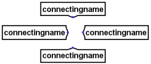
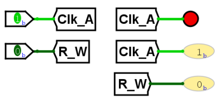
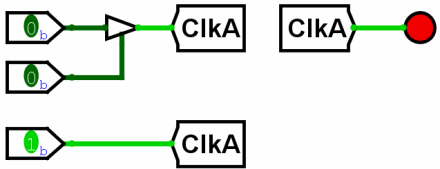

Тоннель
Тоннель
| Библиотека: | Монтаж |
| Введён в: | 2.5.0 (в библиотеке Базовые, перемещён в библиотеку Монтаж в 2.7.0) |
| Внешний вид: |
 |
Поведение
«Тоннель» выполняет ту же роль, что и проводник, виртуально связывая точки схемы без явного прокладывания линии связи. Это очень удобно, когда необходимо соединить удалённые друг от друга элементы, а большое количество пересекающихся линий сделало бы схему нечитаемой.

На рисунке выше показан принцип работы. Все три тоннеля имеют одинаковую метку Clk_A,
поэтому три точки, к которым они подключены, электрически соединены друг с другом. Если бы один из тоннелей
имел другую метку (например, R_W), он относился бы к другой группе связей.
В следующем примере показано возникновение ошибки из-за конфликта уровней сигналов управляемого буфера
и нижнего контакта:

Управляемый буфер сверху выдаёт высокоимпедансное состояние, так как на его управляющий (нижний) вход подан логический 0. В обычных условиях проводник на выходе буфера окрасился бы в синий цвет, но в данном случае он светло-зелёный (логическая 1), поскольку через тоннель он соединен с нижним контактом, имеющим уровень 1. Если сигнал на управляющем входе буфера изменится на 1, буфер начнет транслировать логический 0 (приходящий с его левого входа) в тоннель. Это приведет к конфликту с логической 1 от нижнего контакта, вызвав состояние ошибки (E). В результате проводники от всех связанных тоннелей окрасятся в красный цвет.
Контакты
Тоннель имеет всего один контакт, разрядность которого соответствует атрибуту Биты данных. Этот контакт не является ни входом, ни выходом: тоннели с одинаковыми метками просто прозрачно соединяются друг с другом.
Атрибуты
Когда компонент выбран или добавляется, комбинации клавиш от Alt-0 до Alt-9 меняют его атрибут Биты данных, а клавиши со стрелками — его атрибут Направление.
- Направление
- Направление, в котором ориентирован тоннель.
- Биты данных
- Разрядность (ширина в битах) тоннеля.
- Метка
- Имя (метка) тоннеля. Тоннель соединяется со всеми другими тоннелями с точно таким же именем.
- Шрифт метки
- Шрифт отображения метки.
Поведение Инструмента «Нажатие»
Не предусмотрено.
Назад к Справке по библиотеке